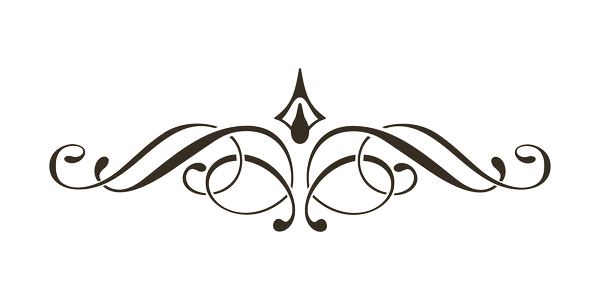

Existence
Holy Sonnet X
1609
John Donne

Photo by John Broadley / The New Yorker
DDonne entered the world as part of a deeply religious Catholic family, with an uncle leading a Jesuit mission in England, and a brother, Henry, meeting his end in prison in 1593 for sheltering a Catholic priest. A versatile individual, Donne donned various roles, including that of a soldier, lawyer, politician, and, eventually, a priest.1His familial connections included ties to Sir Thomas More.2In the early 1590s, Donne forsook Catholicism and embraced Anglicanism for his continued education.
Donne's life took a downturn when he secretly married Ann More, the niece of Lady Edgerton, the wife of his patron and a wealthy Surrey landlord—against his father’s wishes, Sir Thomas Egerton. This decision led to Donne's dismissal from Egerton's service. By 1615, he shifted his focus to a career in the Anglican church, eventually rising to the position of Dean of St. Paul’s in London. Here, his brilliance as a preacher gained widespread acclaim. Over forty literary years, Donne produced a diverse body of work, encompassing songs, sonnets, elegies, satires, anniversary poems, verse letters, and, in his later years, divine meditations, sermons, and devotions.3Although his poems circulated in manuscript form, they were posthumously collected and published in 1633. Donne's reputation faced a decline in the eighteenth and nineteenth centuries, only to experience a revival in the early twentieth century, fueled by the interest of W. B. Yeats4 and T. S. Eliot.56
I had always assumed that Donne wrote this sonnet toward the end of his life, which might have been caused by a typhoid fever. In fact, Donne penned this sonnet at the age of 37 during his 14-year period of disgrace, not in the twilight of his life as an esteemed Anglican priest. and T. S. Eliot.7Much like his love poems infused with religious imagery, Donne's holy sonnets exuded intense romantic and even erotic undertones. In this poem, one of his most celebrated piece, the speaker personifies Death and cautions it against arrogance in its perceived power. The speaker contends that Death's dominion is illusory, offering only respite from worldly burdens to its supposed "victims." Death is portrayed as subservient to other forces—fate, chance, kings, and desperate men—thus lacking true control. Even in its alleged restorative role, Death is deemed inferior to drugs. The speaker concludes by prophesying the demise of Death itself with the declaration, "Death, thou shalt die," an allusion to 1 Corinthians 15:26: "The last enemy that shall be destroyed is death."
Death, be not proud, though some have called thee
Mighty and dreadful, for thou are not so;
For those whom thou think'st thou dost overthrow
Die not, poor Death, nor yet canst thou kill me.
From rest and sleep, which but thy pictures be,
Much pleasure; then from thee much more must flow,
And soonest our best men with thee do go,
Rest of their bones, and soul's delivery.
Thou'art slave to fate, chance, kings, and desperate men,
And dost with poison, war, and sickness dwell,
And poppy'or charms can make us sleep as well
And better than thy stroke; why swell'st thou then?
One short sleep past, we wake eternally,
And death shall be no more; Death, thou shalt die.